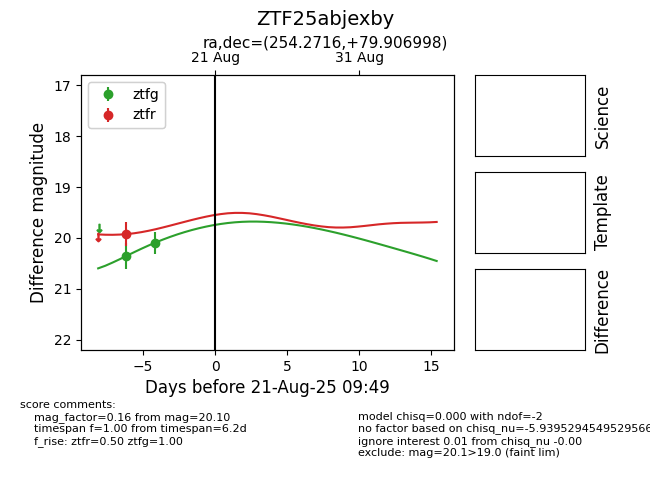

Target ZTF25abjexby at 2025-08-21 09:49, see:
FINK: fink-portal.org/ZTF25abjexby
Lasair: lasair-ztf.lsst.ac.uk/objects/ZTF25abjexby
ALeRCE: alerce.online/object/ZTF25abjexby
alt names
ZTF25abjexby (ztf,alerce)
coordinates:
equatorial (ra, dec) = (254.2716,+79.90700)
galactic (l, b) = (112.5264,+31.57126)
photometry
last ztfg=20.10, ztfr=19.92
2 ztfg, 1 ztfr detections
